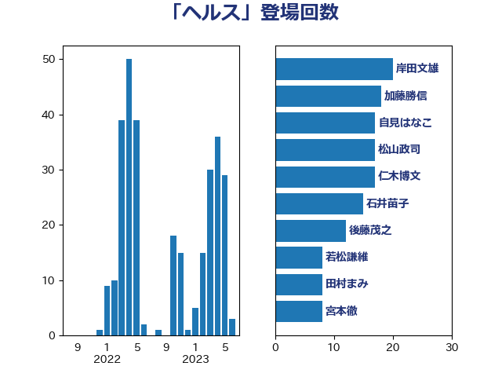

単語「ヘルス」

| 自見はなこ | 自由民主党 | 17 回 |
| 石井苗子 | 日本維新の会 | 15 回 |
| 岸田文雄 | 自由民主党 | 14 回 |
| 仁木博文 | 無所属 | 11 回 |
| 後藤茂之 | 自由民主党 | 11 回 |
| 徳永エリ | 立憲民主党 | 10 回 |
| 田村憲久 | 自由民主党 | 10 回 |
| 川田龍平 | 立憲民主党 | 6 回 |
| 松山政司 | 自由民主党 | 6 回 |
| 田村まみ | 国民民主党 | 6 回 |
| 山本博司 | 公明党 | 5 回 |
| 矢倉克夫 | 公明党 | 5 回 |
| 田中健 | 国民民主党 | 4 回 |
| 一谷勇一郎 | 日本維新の会 | 3 回 |
| 国光あやの | 自由民主党 | 3 回 |
| 塩田博昭 | 公明党 | 3 回 |
| 猪口邦子 | 自由民主党 | 3 回 |
| 野間健 | 立憲民主党 | 3 回 |
| 中西祐介 | 自由民主党 | 2 回 |
| 伊佐進一 | 公明党 | 2 回 |
| 伊藤孝恵 | 国民民主党 | 2 回 |
| 古賀篤 | 自由民主党 | 2 回 |
| 吉田宣弘 | 公明党 | 2 回 |
| 大串正樹 | 自由民主党 | 2 回 |
| 末松信介 | 自由民主党 | 2 回 |
| 本田顕子 | 自由民主党 | 2 回 |
| 柴田巧 | 日本維新の会 | 2 回 |
| 武見敬三 | 自由民主党 | 2 回 |
| 浅野哲 | 国民民主党 | 2 回 |
| 牧島かれん | 自由民主党 | 2 回 |
| 石川博崇 | 公明党 | 2 回 |
| 菅義偉 | 自由民主党 | 2 回 |
| 萩生田光一 | 自由民主党 | 2 回 |
| 高階恵美子 | 自由民主党 | 2 回 |
| こやり隆史 | 自由民主党 | 1 回 |
| 國重徹 | 公明党 | 1 回 |
| 小林茂樹 | 自由民主党 | 1 回 |
| 山田太郎 | 自由民主党 | 1 回 |
| 岸信夫 | 自由民主党 | 1 回 |
| 平山佐知子 | 無所属 | 1 回 |
| 打越さく良 | 立憲民主党 | 1 回 |
| 梅村みずほ | 日本維新の会 | 1 回 |
| 源馬謙太郎 | 立憲民主党 | 1 回 |
| 玉木雄一郎 | 国民民主党 | 1 回 |
| 谷合正明 | 公明党 | 1 回 |
| 重徳和彦 | 立憲民主党 | 1 回 |
| 鈴木敦 | 国民民主党 | 1 回 |
| 阿部知子 | 立憲民主党 | 1 回 |
| 青木一彦 | 自由民主党 | 1 回 |
| 高木かおり | 日本維新の会 | 1 回 |
| 高橋光男 | 公明党 | 1 回 |
| 麻生太郎 | 自由民主党 | 1 回 |